MBK Advisory Dashboard
A client-facing financial reporting tool built to replace a mismatched CRM subscription — turning a bookkeeper's spreadsheet into an advisor-grade report, one industry-benchmarked client at a time.
"I really need a client-facing dashboard with custom reports."
MBK Financial Services is a bookkeeping and advisory practice that reports on client financials every month — revenue, margin, debt, and progress against goals. To get anything presentable in front of a client, MBK was paying for Go High Level, a general-purpose CRM and marketing platform, purely for its reporting surface. Even with the subscription, it could barely produce what was actually needed.
That line, pulled directly from a client interview, became the brief: build the narrow thing MBK actually needed, instead of renting the wrong platform to approximate it.
Starting from the spreadsheet, not the screen
Before sketching any UI, I looked at what a generic version of this problem already looks like. The reference below is a stock BI-style template — stat cards, a donut chart, a bar chart, a leaderboard table — the kind of dashboard built for an internal ops team that lives on the screen all day.
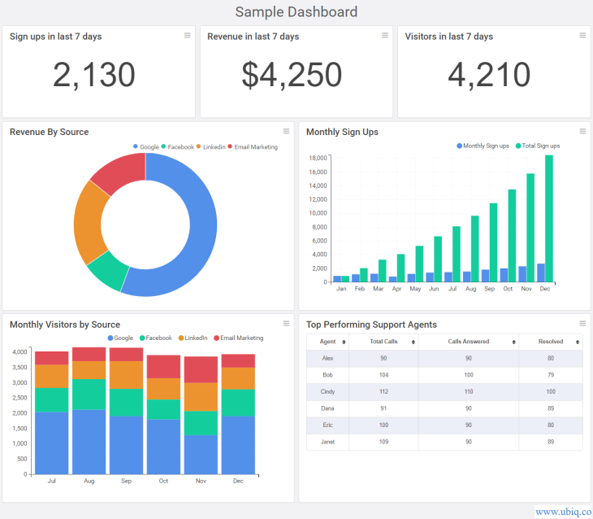
Reference: generic sample dashboard template, Ubiq.co — reviewed before any MBK-specific design work began.
It ruled out the direction fast. MBK's client doesn't live in this dashboard — she opens it once a month, hands a version of it to a customer, and moves on. That reframed the brief from "build a BI tool" to "build a report," which is a different design problem: fewer widgets, more hierarchy, and language a client understands without a legend.
From there I asked to see how MBK actually works. That turned up an Excel workbook — the MBK Business Performance System — that already encoded months of a real client's income, cost of goods, expenses, and debt, plus a set of industry benchmark targets built by hand across eight business types: liquor stores, contractors, medical practices, chiropractors, law firms, and more.
Rather than design a generic dashboard and hope the data would fit, I mined real numbers from one of MBK's actual clients — a liquor store doing roughly $147K in trailing revenue — so every chart, KPI card, and score would hold up against messy, general-ledger-level numbers instead of placeholder data.
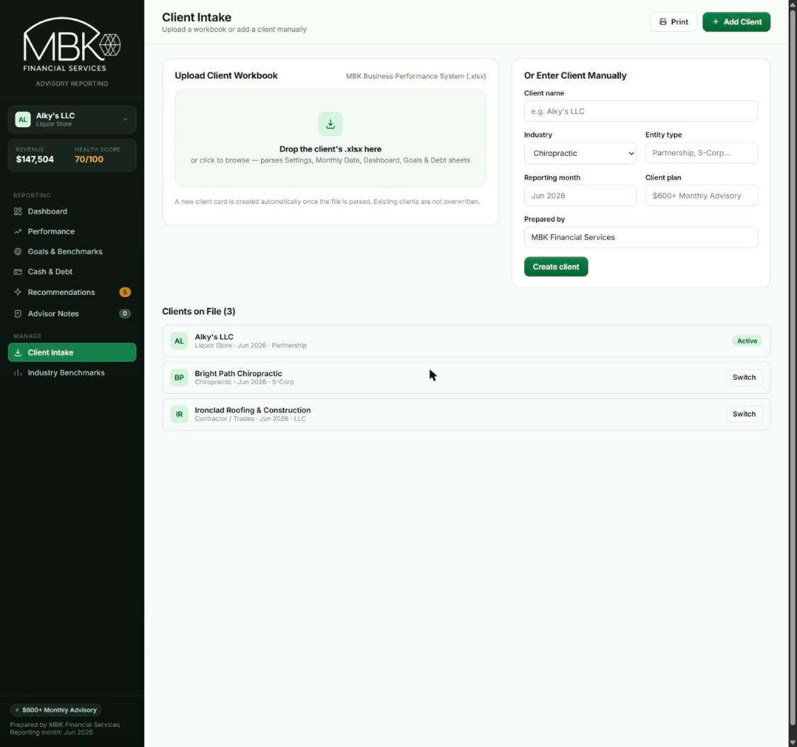
*The research numbers shown throughout this case study have been altered for demo use.
A narrow need, wrapped in the wrong tool
MBK's actual workflow splits into two jobs a CRM was never built for: an internal working view to review a client's numbers against targets before an advisory call, and a clean handoff document that lands in that client's inbox looking like it came from a firm, not a spreadsheet.
Layered on top of that: MBK reports on multiple clients at once, across different industries — and a "healthy" number for one business is a warning sign for another. A liquor store's target cost-of-goods percentage looks nothing like a chiropractic practice's. Go High Level had no concept of any of this; every report had to be forced into a marketing-funnel shaped tool.
One file, zero subscriptions, built around the actual workflow
The result is a single, self-contained dashboard: drop in a client's Excel export and it builds a full client record automatically — a KPI scorecard weighted against that client's specific industry benchmark, a performance-trend view, a goals-and-benchmarks coaching page, a cash-and-debt register, and a prioritized recommendations feed. A client switcher lets MBK hold multiple businesses in one tool, and a dedicated print stylesheet turns the same data into a client-ready PDF with no extra design work. It's hosted for free on GitHub Pages — no subscription, no backend, no per-seat cost.
- 1No new subscriptions. A static file today, with room for a free-tier backend later — the constraint was avoiding a recurring platform fee like Go High Level, not staying code-only forever.
- 2Benchmarked, not generic. Every KPI is scored against the specific target for that client's industry, out of eight built-in profiles.
- 3One data model, two audiences. The same client record powers MBK's internal review and the printable report handed to the client.
- 4Real numbers from day one. Built and tuned against an actual client's general ledger, not sample data.
Advisory Green — a restrained system for a firm that lives in numbers
The palette pulls directly from MBK's own brand green rather than introducing a new one, kept deliberately quiet: a dark, near-black sidebar for navigation, a bright paper canvas for report content, and a single accent color reserved almost entirely for status. No gradients, no glow, no glassmorphism — the goal was a report a client trusts at a glance, not a product demo.
Status is held to a strict three-value system — on target, needs attention, not yet scored — so a client scanning their own report knows instantly what to ask about, without reading a paragraph of analysis first.
How this came together

Also built responsive* — Performance view at phone width.
*Work in progress. Clients mainly use the dashboard to view and print digital reports, so mobile will get a dedicated design pass once there's more real usage to test against.
From raw workbook to advisor-ready report
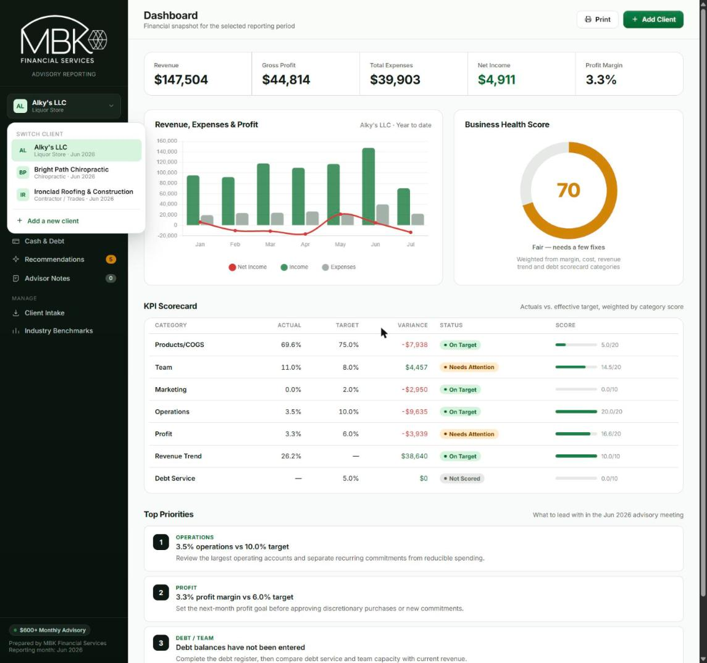
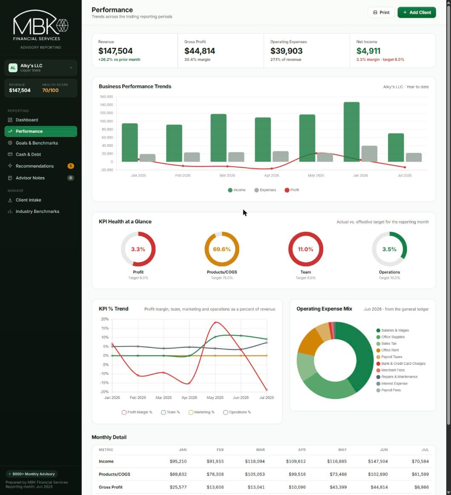
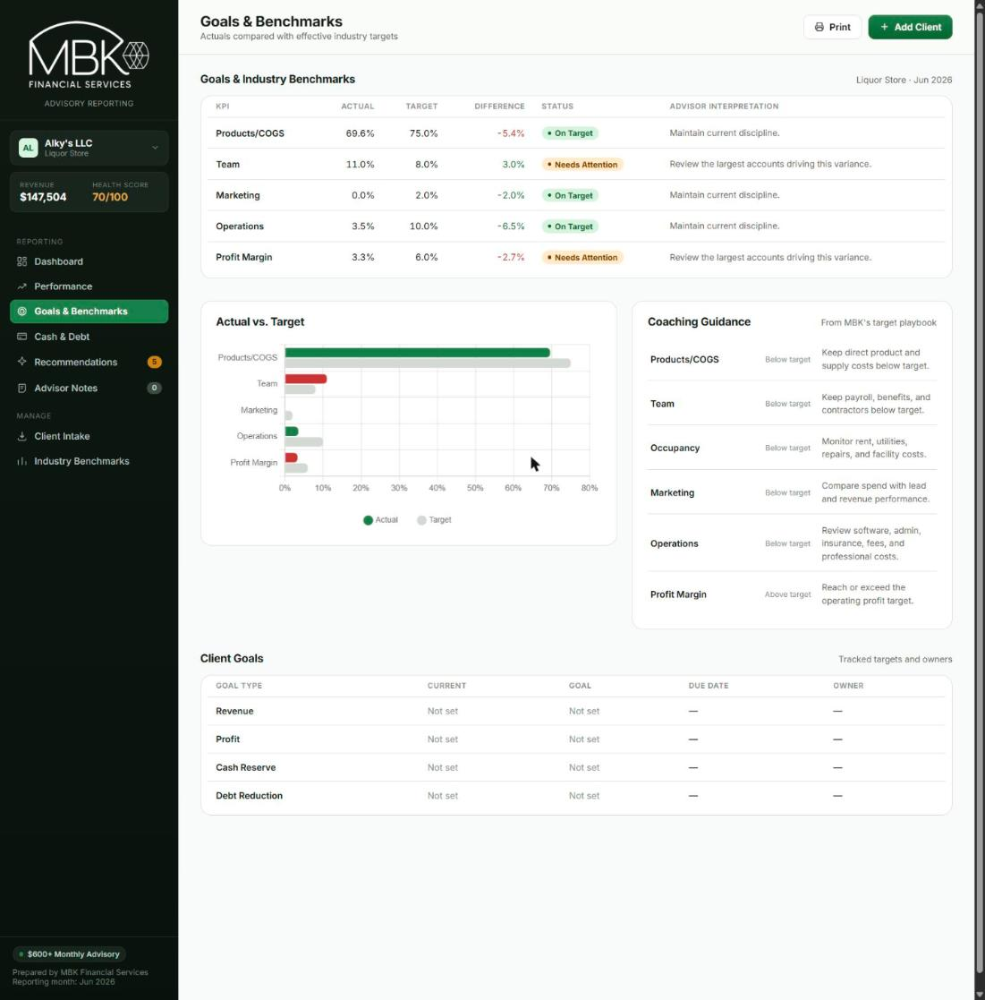
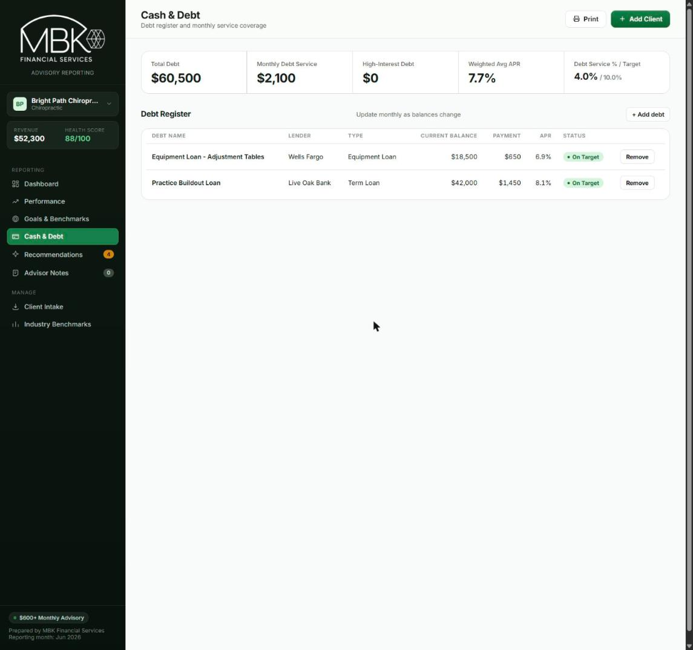
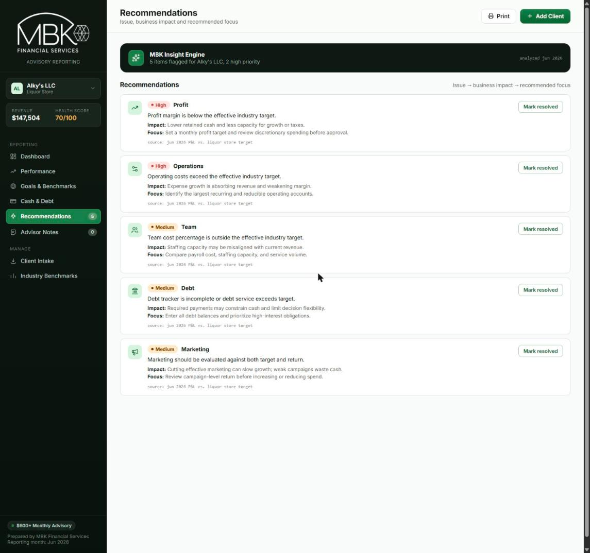
The dashboard had an audience nobody had designed for yet
After MBK walked her client through the first build, one requirement fell out that the original brief never mentioned: the client's customers wanted to log into the same dashboard themselves, between advisory calls, instead of waiting on a printed report. Every screen up to that point had been designed for one audience — MBK, reviewing the numbers before a meeting. This asked for a second one, with a much narrower need.
Since the dashboard has no backend by design — that's the entire reason it costs MBK nothing to run — real authentication was off the table. I built a role-based mock login instead: an Advisor / Client toggle where the selected role controls what's visible, not what's stored anywhere. It's a deliberate trade, clearly labeled as a demo build, in exchange for staying inside the zero-subscription constraint the project started with.
Advisors keep the full working view. Clients get the four screens that answer their own question — Dashboard, Performance, Goals & Benchmarks, Cash & Debt — plus printing. Recommendations, Advisor Notes, Client Intake, and Industry Benchmarks stay advisor-only: internal analysis, not something to hand a client raw.
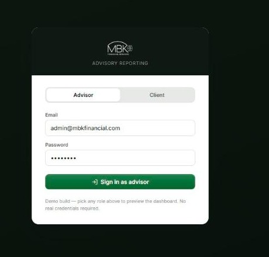
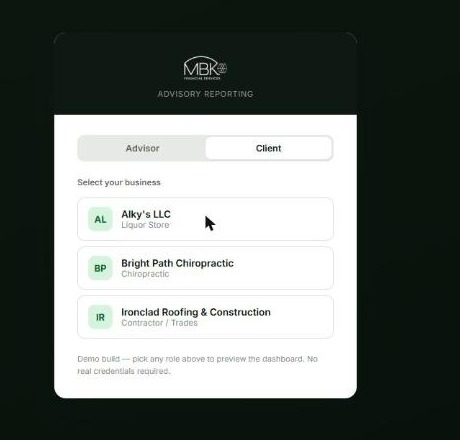
A second gap came out of the same conversation: once a client can log in on her own schedule, she needs a reason to come back and a way to know something changed since her last visit. I added a header alerts bell with a dropdown — a new report available, a workbook just imported, a recommendation flagged — so opening the dashboard between calls surfaces something worth checking, instead of a static page that looks the same every time.
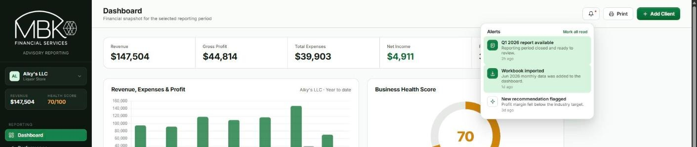
Before building any of it, I mapped the advisor and client journeys side by side in FigJam — partly to catch gaps before writing code (what does logout actually reset? what happens if a client's tile list is empty?), and partly because two roles sharing one dashboard is a harder thing to sanity-check from code than from a flow. Walking both paths end to end is also what surfaced the client-tile pattern above, in place of a first draft that had clients typing a username the way an advisor would.
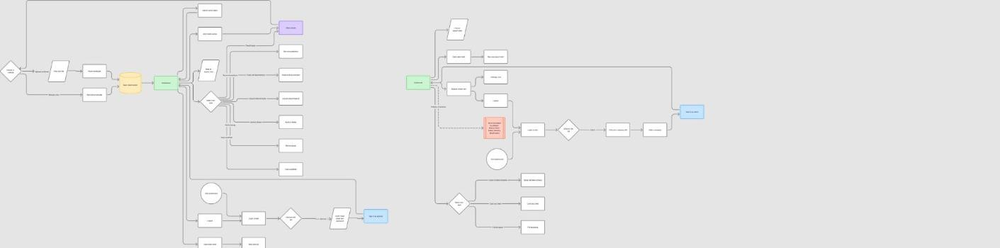
Admin journey (left) and client journey (right), mapped in FigJam before implementation — later reused as documentation for MBK's own reference.
The dashboard is live on GitHub Pages, currently running a real client's data alongside two demo clients used to validate the multi-industry benchmark model. It's documented with a PRD and README in the project repo, and every view has been exported to Figma for MBK's own reference and future handoff.
Role-based login now separates MBK's internal working view from what a client sees, with an alerts system designed to bring clients back to the dashboard between advisory calls rather than waiting for the next printed report.
Next up: persistent storage. Client records currently live in-session and reset on reload — there's no way for a client's own device to see data MBK uploaded from hers. The plan is a lightweight backend like Supabase, paired with real authentication and row-level security rather than persistence alone, since a real database holding client financials needs more than a UI-level access rule to protect it.
Also on the list: expanding the industry benchmark set beyond the initial eight profiles as MBK brings on clients outside those categories.